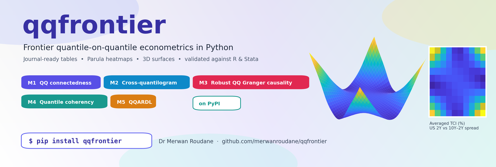
What it doesFive methods, one consistent interface
Every result object prints journal tables, exports LaTeX and Markdown, draws Parula heatmaps, static and interactive 3D surfaces, and writes a plain-language interpretation.
Quantile-on-quantile connectedness
Spillovers between quantiles of several markets: Gabauer–Stenfors (2024), kernel Q-on-Q-QVAR (2026), TVP-QQVAR (2026).
Cross-quantilogram
Directional predictability between quantiles with stationary-bootstrap inference (Han, Linton, Oka & Whang, 2016).
Robust quantile Granger causality
Causality in quantiles robust to structural breaks, with dated regimes (Mayer, Wied & Troster, 2025).
Quantile coherency
Dependence between quantiles across short, medium and long cycles (Baruník & Kley, 2019).
Quantile-on-quantile ARDL
Bounds test, long run, short run and ECT on quantile series (Destek et al., 2025).
InstallationInstall in one line
pip install qqfrontier # core
pip install "qqfrontier[plotly]" # + interactive 3D surfaces
pip install "qqfrontier[fast]" # + numba / joblib acceleration
pip install "qqfrontier[full]" # everything (recommended)New to Python? Install Anaconda, open Anaconda Prompt and type the line above. The step-by-step guide shows how to load your own Excel or CSV file and write every line of code.
TheoryThe five estimators in brief
QQ connectedness
Each equation of the QVAR is estimated at its own quantile, \(Q_{\tau_j}(y_{jt}\mid y_{t-1}) = c_j(\tau_j) + A_j(\tau_j) y_{t-1}\). The generalized FEVD $$\theta_{ij}(H)=\frac{\sigma_{jj}^{-1}\sum_{h=0}^{H-1}(e_i'\Psi_h\Sigma e_j)^2}{\sum_j \sigma_{jj}^{-1}\sum_{h}(e_i'\Psi_h\Sigma e_j)^2}$$ gives TO, FROM, NET and the adjusted total connectedness \(TCI=\tfrac{k}{k-1}\overline{TO}\) for every quantile configuration \((\tau_1,\tau_2)\).Cross-quantilogram
$$\hat\rho_\tau(k)=\frac{\sum_{t}\psi_{\tau_1}(y_{1t}-\hat q_{1t})\,\psi_{\tau_2}(y_{2,t-k}-\hat q_{2,t-k})}{\sqrt{\sum_t\psi^2_{\tau_1}}\sqrt{\sum_t\psi^2_{\tau_2}}},\qquad \psi_a(u)=\mathbb 1[u<0]-a$$ with the Box–Ljung test \(\check Q^{(p)}_\tau=T(T+2)\sum_{k\le p}\hat\rho_\tau^2(k)/(T-k)\) and stationary-bootstrap critical values.Robust quantile Granger causality
From the subgradient \(H_n(\lambda,\tau)=(X'X/n)^{-1/2}n^{-1/2}\sum_{i\le\lambda n}x_i\psi_\tau(y_i-w_i'\hat\alpha(\tau))\): $$\mathrm{expLM}=\int_{\mathcal T}\exp\Big[\tfrac12\Big(\sup_\lambda\big\|R'(H_n(\lambda)-\lambda H_n(1))\big\|_\infty+\|R'H_n(1)\|_\infty\Big)\Big]d\tau$$ jointly tests no causality and parameter stability.Quantile coherency
$$R(\omega;\tau_1,\tau_2)=\frac{f_{12}(\omega;\tau_1,\tau_2)}{\sqrt{f_{11}(\omega;\tau_1,\tau_1)f_{22}(\omega;\tau_2,\tau_2)}}$$ estimated from smoothed rank-based copula cross-periodograms, with pointwise confidence intervals.QQARDL
On the quantile series of Li (2022), \(\Delta Y_t=a_0+d_0Y_{t-1}+d_1\Delta X_t+b_1X_{t-1}+e_t\) for every pair \((\tau,\theta)\): bounds test of \(g_1=g_2=0\), long run \(-b_1/d_0\), short run \(d_1\), error correction \(d_0\).Faithful to the papers
Every code step is mapped to the equation it implements in docs/methods.md. M1 reproduces the R package qqconnect and Fig. 1(a) of Bonaccolto et al. (2026) cell by cell; M2 equals quantilogram; M5 reproduces the Stata command qqardl table by table.
Complete applications on real dataEvery table and figure, generated by one script
Data shipped with the package: daily FRED changes of the US 2-year Treasury yield (US2Y) and the 10Y–2Y spread (US2Y10Y), 1998–2023 (public domain); World Bank WDI CO₂ and GDP per capita of Algeria and Egypt (CC BY 4.0). Script: examples/qqfrontier_empirical.py.
Summary statistics
import qqfrontier as qf
yl = qf.load_us_yields(main_only=True)
print(qf.descriptive_table(yl[["US2Y", "US2Y10Y"]]))======================================================================================================================
Summary statistics
======================================================================================================================
Mean Variance Skewness Ex.Kurtosis JB ERS Q(20) Q2(20)
----------------------------------------------------------------------------------------------------------------------
US2Y -0.009 29.550 -0.413*** 8.926*** 20935.593*** -9.490*** 27.299*** 1558.579***
US2Y10Y -0.015 15.069 0.315*** 6.259*** 10311.451*** -8.881*** 23.535*** 680.318***
----------------------------------------------------------------------------------------------------------------------
Unconditional correlations
US2Y 1.000 -0.253
US2Y10Y -0.253 1.000
======================================================================================================================
Notes: *** p<0.01, ** p<0.05, * p<0.10. Skewness: D'Agostino (1970) test; Ex.Kurtosis:
Anscombe-Glynn (1983) test; JB: Jarque-Bera (1980); ERS: unit-root test with
a constant; Q(20) and Q2(20): Fisher-Gallagher (2012) weighted portmanteau
tests on the series and on their squares.
M1 Quantile-on-quantile connectedness
x = yl[["date", "US2Y", "US2Y10Y"]]
taus = np.arange(0.05, 1.0, 0.10)
gs = qf.qqc_gs(x, taus=taus, window=200, horizon=20) # Gabauer & Stenfors (2024)
qoq = qf.qqc_kernel(qf.load_us_yields()[["date","US2Y","US2Y10Y"]], taus=taus,
window=200, horizon=20, bandwidth=0.15, presample=100, n_jobs=8) # BCG (2026)
tvp = qf.qqc_tvp(x, taus=taus, horizon=30) # TVP-QQVAR (2026)
print(gs.summary()); print(gs.interpret())
gs.plot("heatmap"); gs.plot("dynamic"); gs.plot("net"); gs.plot("surface"); gs.plot("panel")| US2Y quantile \ US2Y10Y quantile | 0.05 | 0.15 | 0.25 | 0.35 | 0.45 | 0.55 | 0.65 | 0.75 | 0.85 | 0.95 |
|---|---|---|---|---|---|---|---|---|---|---|
| 0.95 | 71.6 | 56.6 | 40.7 | 24.4 | 11.3 | 9.5 | 17.2 | 30.3 | 49.3 | 66.8 |
| 0.85 | 56.4 | 45.2 | 33.7 | 22.3 | 12.9 | 11.1 | 14.4 | 21.4 | 33.7 | 47.7 |
| 0.75 | 40.9 | 33.9 | 27.0 | 20.4 | 14.7 | 13.4 | 14.1 | 16.6 | 22.7 | 31.2 |
| 0.65 | 22.9 | 22.1 | 20.6 | 18.8 | 16.5 | 15.4 | 13.9 | 12.3 | 11.9 | 13.4 |
| 0.55 | 12.0 | 14.2 | 15.7 | 16.8 | 17.0 | 16.6 | 15.1 | 12.7 | 9.8 | 7.4 |
| 0.45 | 7.2 | 9.4 | 11.8 | 14.2 | 16.3 | 17.2 | 17.0 | 15.9 | 13.7 | 10.6 |
| 0.35 | 13.8 | 12.0 | 12.1 | 12.9 | 15.4 | 16.8 | 18.8 | 20.8 | 22.5 | 23.1 |
| 0.25 | 30.2 | 22.2 | 17.0 | 13.4 | 14.0 | 15.2 | 19.9 | 26.2 | 34.1 | 40.7 |
| 0.15 | 46.8 | 33.2 | 22.6 | 14.1 | 11.9 | 13.2 | 21.4 | 32.7 | 46.0 | 57.2 |
| 0.05 | 64.9 | 47.5 | 31.3 | 17.0 | 9.9 | 11.3 | 23.7 | 40.1 | 58.5 | 73.0 |
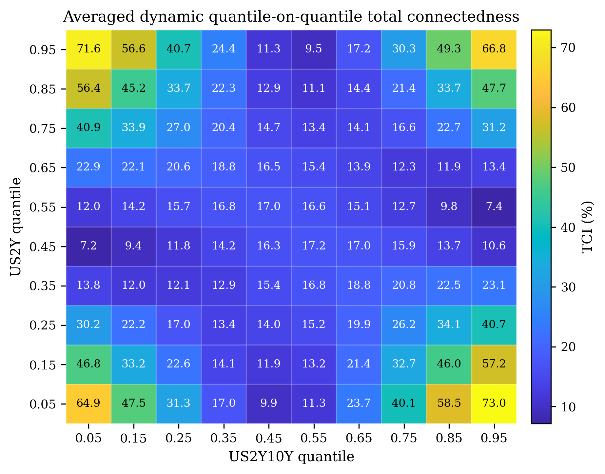
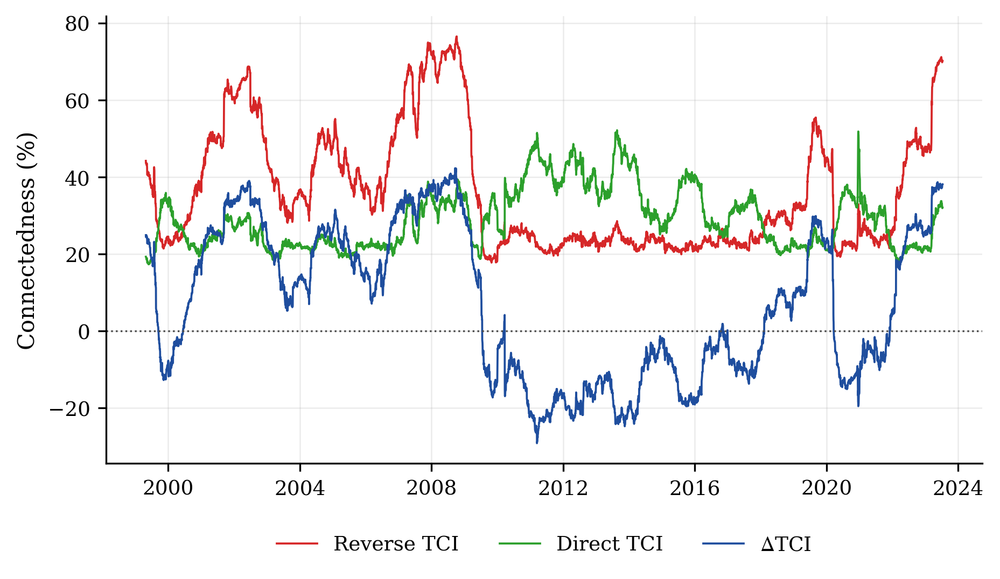
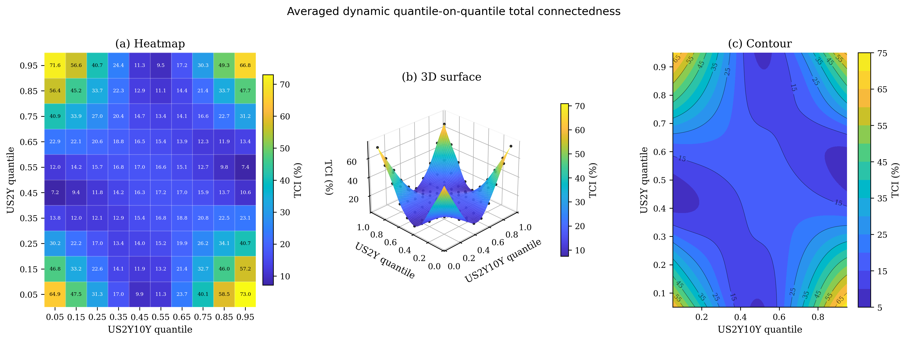
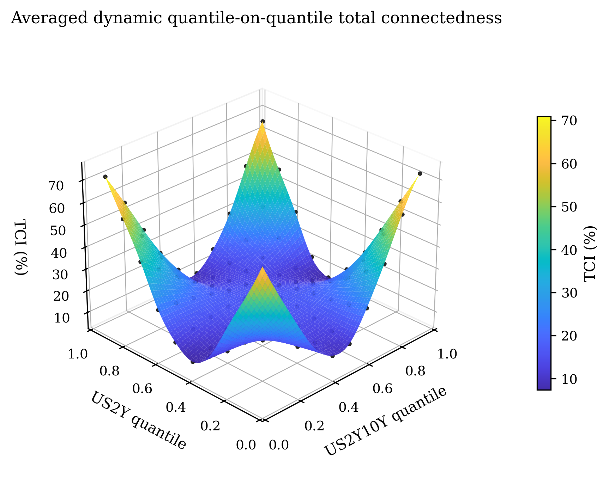
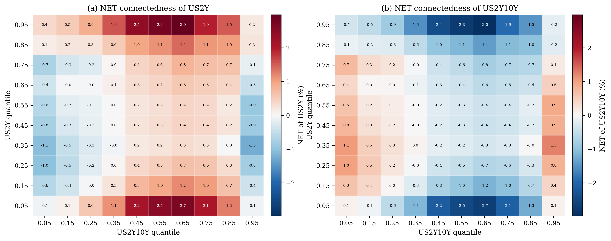
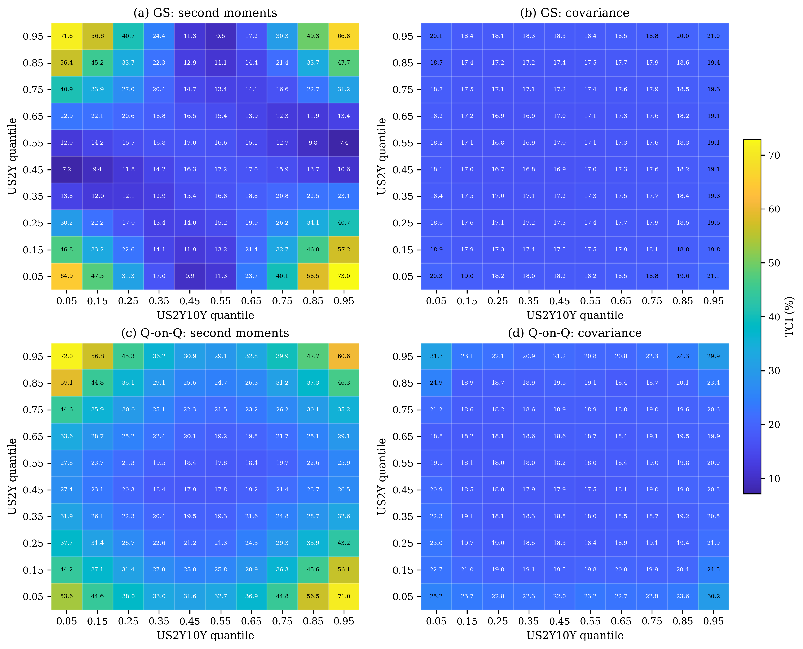
Decomposition of TCI differences (BCG 2026, Table A.2)
| Mean | MA | Min | P5 | P95 | Max | |
|---|---|---|---|---|---|---|
| ('Direct TCI', 'Total difference') | -8.52 | 14.87 | -28.37 | -24.56 | 20.38 | 27.94 |
| ('Direct TCI', '(3) Method') | 2.56 | 3.42 | -6.21 | -2.76 | 9.81 | 17.24 |
| ('Direct TCI', '(3) Centering') | -11.08 | 17.92 | -30.45 | -27.37 | 23.03 | 31.27 |
| ('Direct TCI', '(4) Method') | 2.55 | 4.95 | -11.55 | -6.78 | 8.95 | 19.21 |
| ('Direct TCI', '(4) Centering') | -11.08 | 16.49 | -34.54 | -30.86 | 12.28 | 22.32 |
| ('Reverse TCI', 'Total difference') | -14.98 | 15.04 | -27.53 | -24.3 | -2.54 | 4.07 |
| ('Reverse TCI', '(3) Method') | 3.02 | 3.37 | -6.22 | -1.13 | 9.15 | 17.67 |
| ('Reverse TCI', '(3) Centering') | -18 | 18.04 | -29.69 | -27.02 | -3.16 | 5.03 |
| ('Reverse TCI', '(4) Method') | 1.22 | 4.15 | -13.19 | -6.66 | 7.28 | 11.99 |
| ('Reverse TCI', '(4) Centering') | -16.2 | 16.55 | -32 | -28.32 | 1.34 | 10.95 |
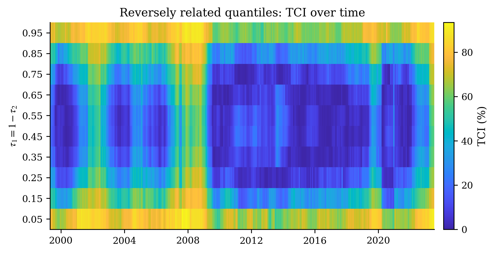
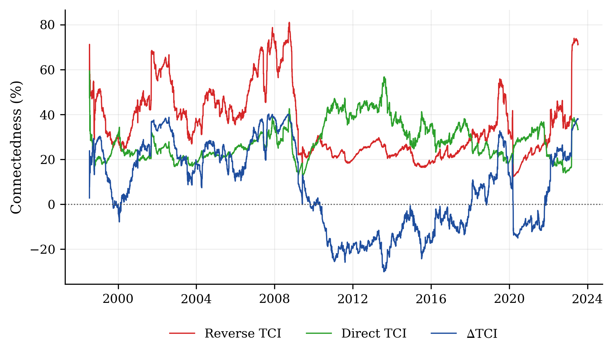
M2 Cross-quantilogram: does the 2-year yield predict the spread?
y1 = yl.set_index("date")["US2Y10Y"]; y2 = yl.set_index("date")["US2Y"]
cq = qf.cross_quantilogram_test(y1, y2, tau1=[.05,.1,.2,.3,.5,.7,.8,.9,.95], tau2=[.1,.9],
max_lag=20, n_boot=1000, sup_range=np.arange(.10,.31,.02), seed=1)
print(cq.summary()); cq.plot("correlogram", tau2=0.10); cq.plot("heatmap", k=1)| tau1 | k=1 | k=2 | k=3 | k=5 | k=10 | k=20 |
|---|---|---|---|---|---|---|
| 0.05 | 0.036 | 0.039* | 0.036 | 0.043* | 0.018 | 0.033 |
| 0.10 | 0.030 | 0.028 | 0.038 | 0.046* | 0.010 | 0.026* |
| 0.20 | 0.030 | 0.038* | 0.048* | 0.058* | 0.023* | 0.028* |
| 0.30 | 0.033 | 0.026 | 0.031 | 0.046* | 0.049* | 0.017 |
| 0.50 | 0.002 | 0.008 | 0.007 | 0.014 | 0.001 | 0.018 |
| 0.70 | 0.008 | 0.015 | 0.002 | 0.021 | 0.001 | 0.006 |
| 0.80 | -0.019 | -0.016 | -0.018 | 0.005 | -0.029 | -0.015 |
| 0.90 | -0.007 | -0.021 | -0.021 | 0.001 | -0.021 | -0.023 |
| 0.95 | -0.022 | -0.036 | -0.027* | -0.022 | -0.026* | -0.026* |
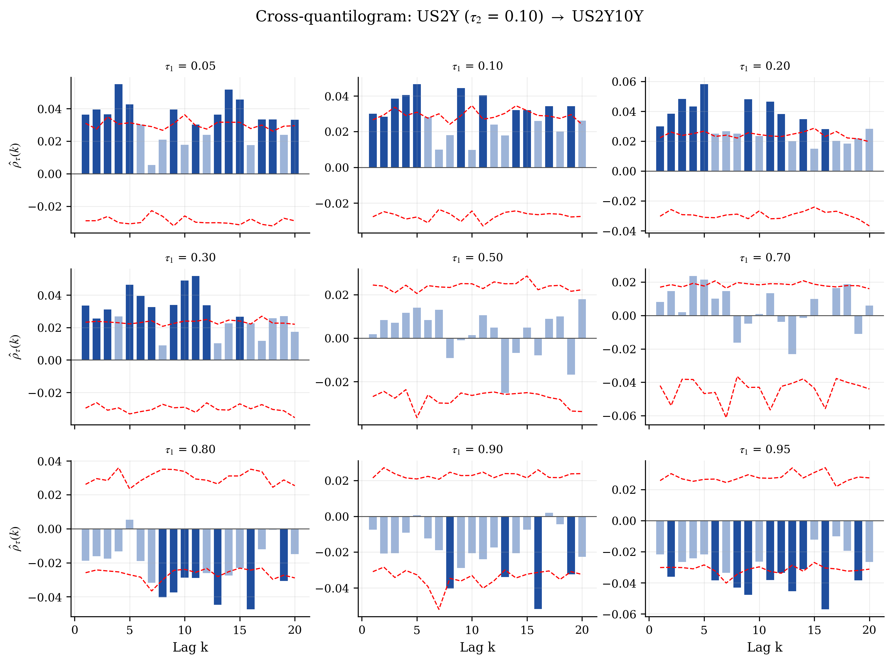
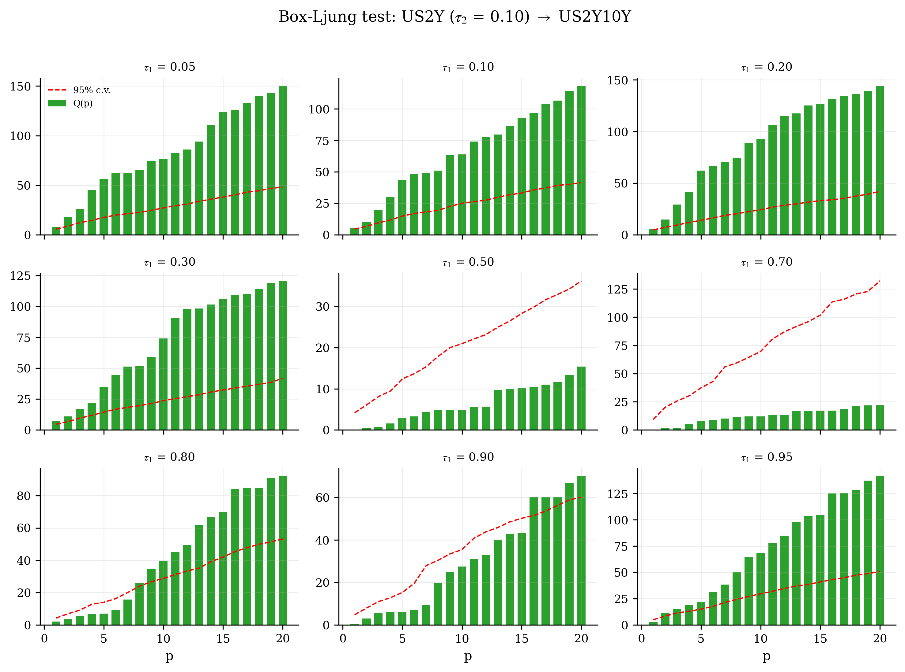
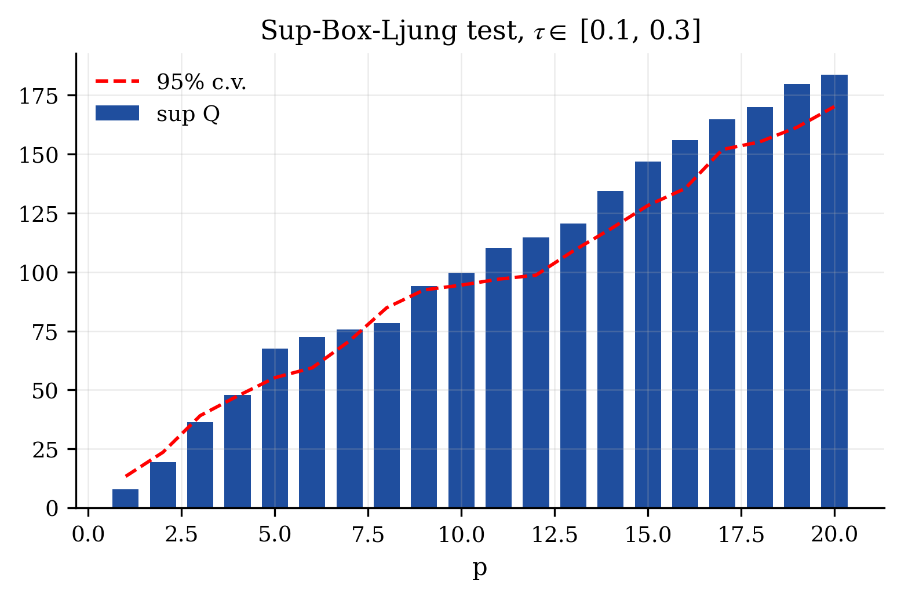
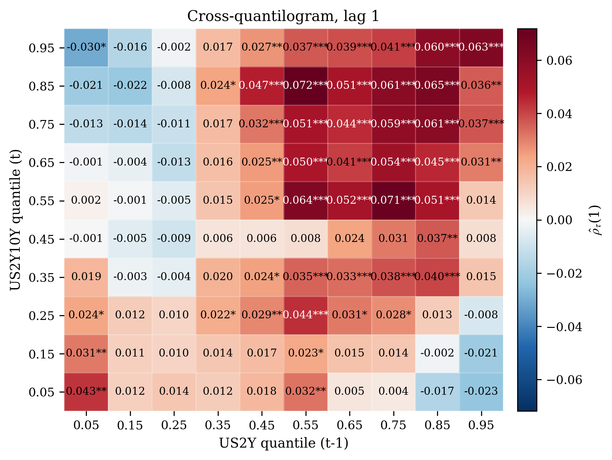
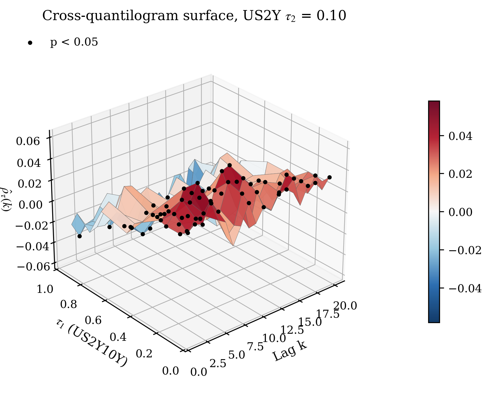
M3 Quantile Granger causality robust to instability
gc = qf.qgc_instability(y1, y2, lags=1, n_boot=499, seed=3, alpha=0.10)
print(gc.summary()); gc.plot("cusum"); gc.plot("lm"); gc.plot("cusum_map")
print(qf.qgc_table(y1, y2, lags=(1, 3, 6), n_boot=249)) # MWT Table 3 layout============================================================================================
Quantile Granger Causality Robust to Instability
(Mayer, Wied and Troster, 2025)
============================================================================================
H0: US2Y does not Granger-cause US2Y10Y in quantiles, with stable effect
Lags of cause (q) : 1 Observations : 6252
Regressors in w (incl. 1) : 2 Sample : 1998-07-15 to 2023-07-11
Critical values : bootstrap (B=499)Quantile grid : 0.05-0.95 (91 points)
--------------------------------------------------------------------------------------------
Quantile range supWald p-value expLM p-value supLM p-value
--------------------------------------------------------------------------------------------
[0.05, 0.95] 21.117 0.000*** 1.664 0.012** 1.690 0.080*
[0.05, 0.20] 1.662 0.553 0.200 0.359 0.757 0.513
[0.40, 0.60] 21.117 0.000*** 0.405 0.040** 1.674 0.056*
[0.80, 0.95] 8.284 0.018** 0.295 0.000*** 1.654 0.004***
--------------------------------------------------------------------------------------------
LM(tau) at selected quantiles
--------------------------------------------------------------------------------------------
tau LM(tau) sup LM1 LM2 p-value p (asy)
--------------------------------------------------------------------------------------------
0.05 2.434 0.298 0.233 0.130 0.106
0.10 1.672 0.247 0.254 0.487 0.406
0.25 1.578 0.233 0.451 0.503 0.464
0.50 3.189 0.644 0.950 0.022** 0.022
0.75 2.800 0.445 0.768 0.054* 0.058
0.90 4.547 0.381 0.983 0.000*** 0.001
0.95 4.331 0.320 0.624 0.000*** 0.002
--------------------------------------------------------------------------------------------
Regimes of Granger causality (Algorithm 2, Sidak-corrected levels)
--------------------------------------------------------------------------------------------
1998-07-15 -> 2023-07-11 ( 6252 obs.) GC: yes expLM p = 0.012
Step 1: expLM p = 0.012 <= 0.1: reject H0.
Step 2: expCUSUM p = 0.159 > 0.0513: stable Granger causality on the whole sample.
============================================================================================
Significance: *** p<0.01, ** p<0.05, * p<0.10. supLM/expLM: MWT Eq. (8); supWald: Koenker and
Machado (1999) with pairs-bootstrap covariance; LM(tau) = h(tau)(sup LM1 + LM2), Sec. 3.1.
p-values (%) by lag order and quantile range (MWT 2025, Table 3 layout)
| [0.05, 0.95] supWald | [0.05, 0.95] expLM | [0.05, 0.95] supLM | [0.05, 0.20] supWald | [0.05, 0.20] expLM | [0.05, 0.20] supLM | [0.40, 0.60] supWald | [0.40, 0.60] expLM | [0.40, 0.60] supLM | [0.80, 0.95] supWald | [0.80, 0.95] expLM | [0.80, 0.95] supLM | |
|---|---|---|---|---|---|---|---|---|---|---|---|---|
| q = 1 | 0 | 1.205 | 4.418 | 63.05 | 36.145 | 53.414 | 0 | 4.418 | 3.614 | 1.1 | 0 | 0 |
| q = 3 | 20.725 | 6.426 | 34.137 | 50 | 26.104 | 57.43 | 37.425 | 22.088 | 37.751 | 7 | 0.402 | 2.811 |
| q = 6 | 27.825 | 27.711 | 53.815 | 73.675 | 50.201 | 62.651 | 35.175 | 46.988 | 41.365 | 10.025 | 0.803 | 6.827 |
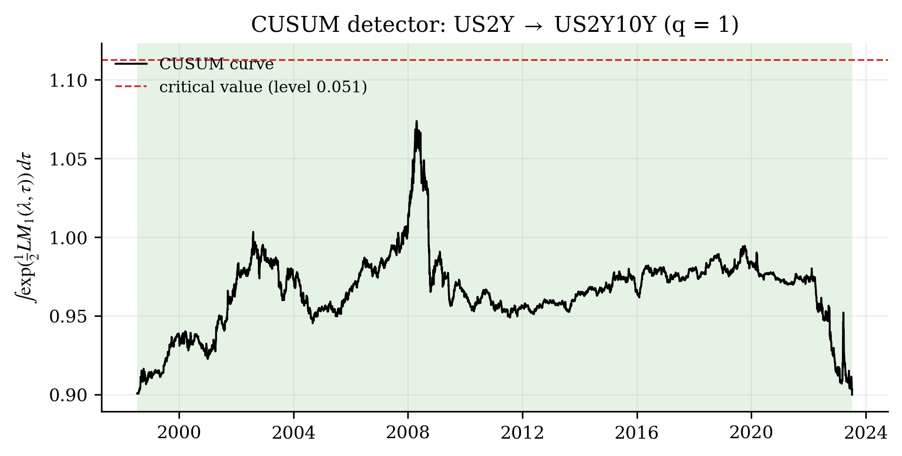
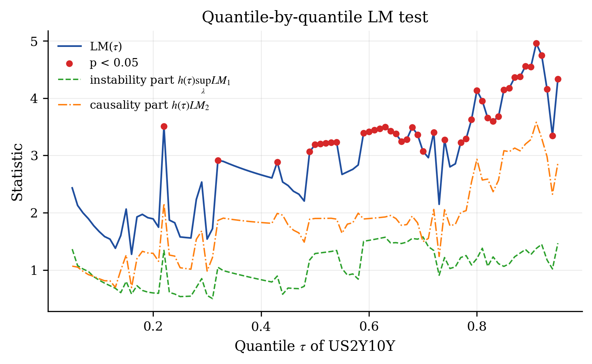
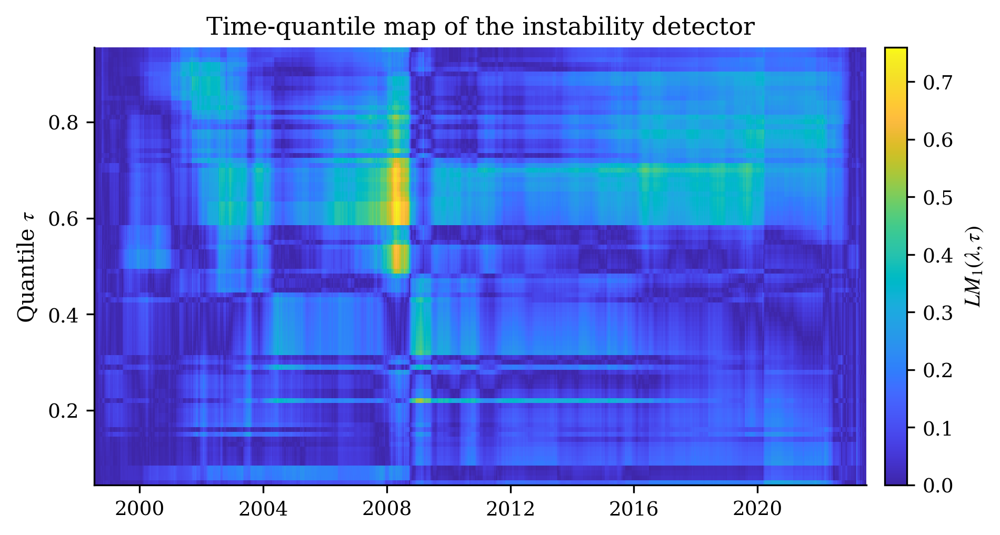
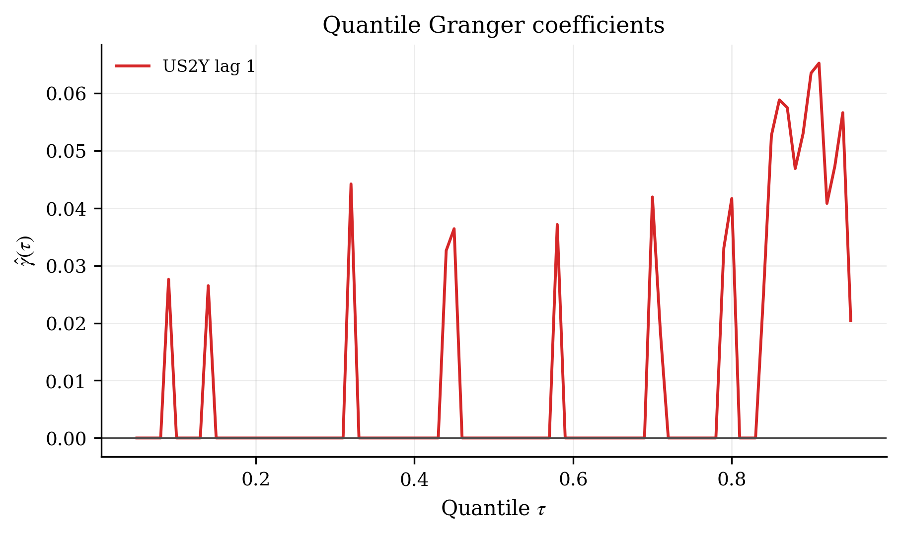
M4 Quantile coherency
coh = qf.quantile_coherency(yl["US2Y"], yl["US2Y10Y"], taus=np.arange(.05,.96,.05),
periods={"W": 5, "M": 22, "Y": 250})
print(coh.summary()); coh.plot("frequency"); coh.plot("quantile"); coh.plot("surface", period="M")====================================================================================
Quantile Coherency (Barunik and Kley, 2019)
====================================================================================
Series j1 / j2 : US2Y / US2Y10Y
Observations : 6253 Kernel / bandwidth : epanechnikov / 0.0562
Quantile levels : 19 x 19 Frequencies : 3126
------------------------------------------------------------------------------------
Real part of quantile coherency by period (columns) and quantile pair (rows)
------------------------------------------------------------------------------------
tau1|tau2 W (5) M (22) Y (250) Short (2)
------------------------------------------------------------------------------------
0.05|0.05 0.034 0.003 0.268* 0.023
0.10|0.10 0.004 -0.059 0.193* -0.128*
0.50|0.50 0.018 -0.069 -0.107 0.036
0.90|0.90 -0.035 -0.029 0.170* -0.109
0.95|0.95 -0.008 0.011 0.317* -0.084
0.05|0.95 -0.156* -0.183* -0.408* -0.180*
0.95|0.05 -0.091* -0.097* -0.341* -0.183*
====================================================================================
* the pointwise CI of Re R excludes zero.
Notes: rank-based quantile coherency (Barunik and Kley, 2019); n = 6253; epanechnikov kernel, b_n = 0.0562; 95% pointwise CIs (Supp. S5.2); stars: CI of Re R excludes zero.
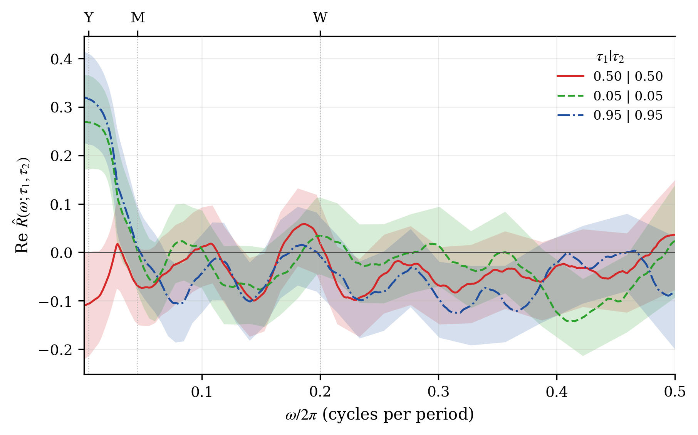
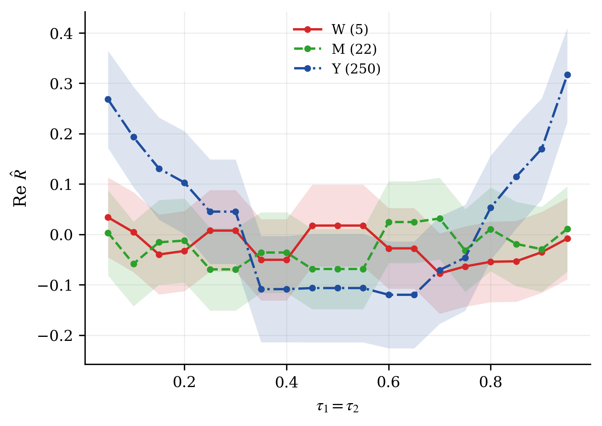
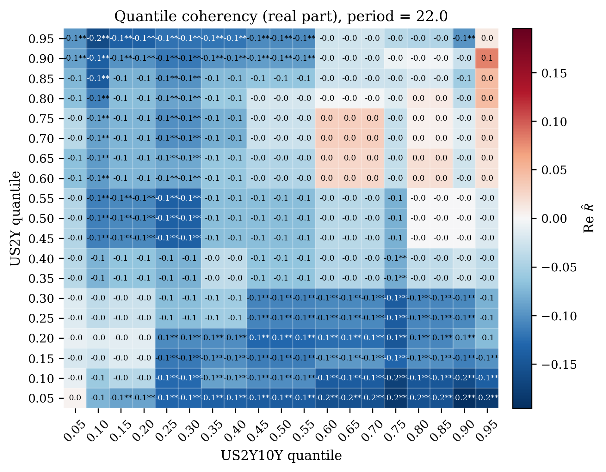
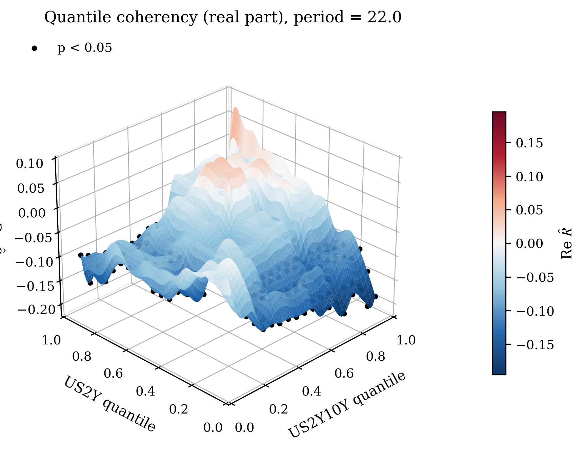
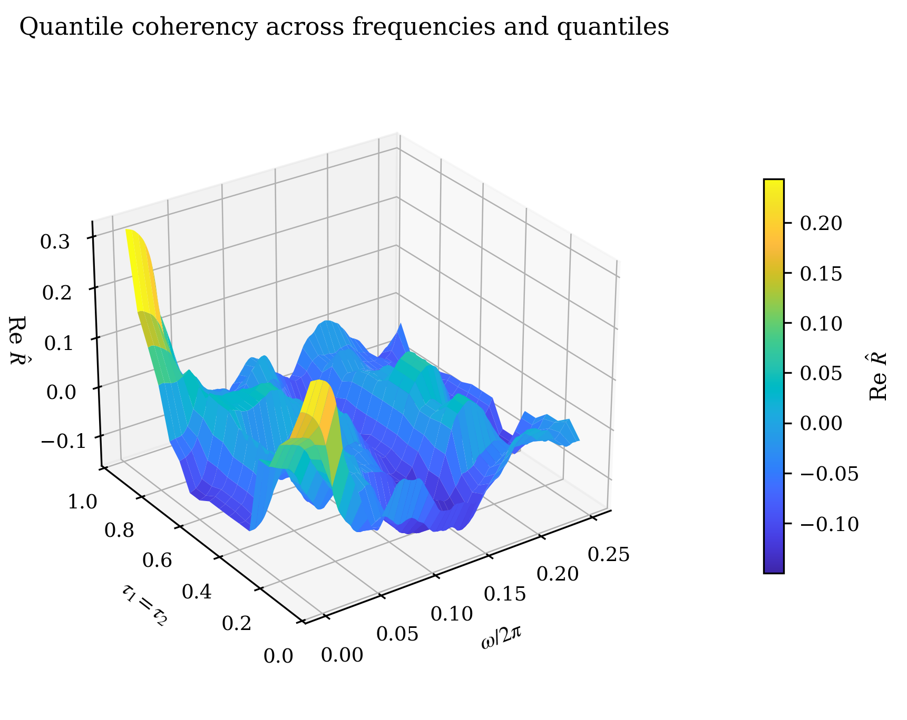
M5 Quantile-on-quantile ARDL: CO₂ and growth in Algeria
d = qf.load_wdi_co2_gdp("Algeria").set_index("year")
r = qf.qqardl_fit(d["lnCO2"], d["lnGDP"])
print(r.summary()); r.plot("heatmap", stat="lr"); r.plot("surface", stat="lr"); r.plot("coint")------------------------------------------------------------------------------------------------------------------------
Quantile-on-Quantile ARDL (QQARDL) Number of obs = 53
Destek et al. (2025); QSER of Li (2022) ARDL order = (1,1)
Dependent: lnCO2 Regressor: lnGDP Quantile pairs = 121 Sample: 1970-2024
------------------------------------------------------------------------------------------------------------------------
Bounds test F-statistic, Eq. (1) (H0: no cointegration)
theta|tau 0.05 0.10 0.20 0.30 0.40 0.50 0.60 0.70 0.80 0.90 0.95
------------------------------------------------------------------------------------------------------------------------
0.95 42.775*** 14.646*** 4.259 3.445 4.069 3.731 2.927 2.749 2.857 1.858 4.936*
0.90 44.935*** 13.423*** 4.989* 3.567 4.475 3.951 3.685 3.473 1.732 0.985 4.855
0.80 30.036*** 12.660*** 4.581 3.031 3.832 3.595 3.429 2.935 3.074 0.644 5.458*
0.70 40.653*** 13.414*** 4.171 2.629 4.121 5.260* 8.216** 5.022* 5.060* 3.696 7.139**
0.60 38.934*** 12.601*** 6.047** 4.402 6.240** 6.529** 8.166** 2.796 3.299 2.325 0.794
0.50 37.163*** 13.839*** 4.944* 4.117 8.694*** 7.028** 9.082*** 2.505 1.969 2.723 2.634
0.40 36.210*** 14.345*** 8.026** 8.796*** 7.131** 4.578 4.643 1.741 2.235 2.605 1.666
0.30 38.503*** 13.794*** 8.755*** 6.841** 7.147** 5.234* 4.723 2.101 1.931 1.881 1.855
0.20 36.609*** 14.502*** 9.521*** 8.918*** 6.687** 6.043** 5.702* 3.037 2.235 1.996 1.953
0.10 35.985*** 19.243*** 11.694*** 7.347** 6.848** 4.802 3.262 1.931 1.802 1.023 2.198
0.05 38.599*** 16.394*** 3.336 2.721 2.736 2.567 1.837 1.517 1.192 0.420 1.552
Long-run coefficient LR = -b1/d0 [cointegrated pairs only]
theta|tau 0.05 0.10 0.20 0.30 0.40 0.50 0.60 0.70 0.80 0.90 0.95
------------------------------------------------------------------------------------------------------------------------
0.95 -1.833 0.075 . . . . . . . . 1.531***
0.90 -0.881 0.384 0.571* . . . . . . . .
0.80 -0.767 0.537 . . . . . . . . 1.503***
0.70 0.634 0.689** . . . 0.844*** 1.101*** 1.235*** 1.089*** . 0.983***
0.60 0.506 0.514* 0.462*** . 0.544*** 0.631*** 0.813*** . . . .
0.50 0.642 0.560** 0.502*** . 0.615*** 0.704*** 0.836*** . . . .
0.40 0.769 0.524* 0.579*** 0.657*** 0.662*** . . . . . .
0.30 0.397 0.463* 0.458*** 0.485*** 0.498*** 0.538** . . . . .
0.20 0.848 0.638** 0.484*** 0.582*** 0.568*** 0.629*** 0.782*** . . . .
0.10 1.316* 0.739*** 0.427*** 0.479** 0.482** . . . . . .
0.05 1.387*** 0.606*** . . . . . . . . .
Short-run coefficient d1 on D.x (Eq. 4)
theta|tau 0.05 0.10 0.20 0.30 0.40 0.50 0.60 0.70 0.80 0.90 0.95
------------------------------------------------------------------------------------------------------------------------
0.95 4.517* 1.914** 0.545* 0.347 0.453 0.600* 0.625* 0.831*** 1.839*** 0.512 0.733***
0.90 4.706** 1.900*** 0.376 0.457** 0.470** 0.555** 0.542** 0.518** 1.991*** 0.621*** 0.537***
0.80 4.134*** 1.512*** 0.344** 0.434*** 0.496*** 0.468** 0.524*** 0.574*** 1.435*** 0.661*** 0.737***
0.70 4.853*** 1.712*** 0.449*** 0.413*** 0.395** 0.467** 0.590*** 0.633*** 1.135*** 0.482*** 0.289*
0.60 1.640* 0.855*** 0.303*** 0.160* 0.189* 0.277** 0.268** 0.244** 0.379** 0.188* 0.262***
0.50 1.102 0.822** 0.439*** 0.290*** 0.213* 0.334*** 0.336*** 0.224* 0.495** 0.064 0.005
0.40 3.521*** 0.734* 0.293** 0.247** 0.249* 0.365** 0.393*** 0.362*** 0.581** 0.131 0.070
0.30 2.660** 1.030*** 0.292** 0.275** 0.279* 0.365** 0.403*** 0.369*** 0.508* 0.138 0.010
0.20 2.445** 1.125*** 0.252** 0.315*** 0.148 0.172 0.268** 0.146 0.365 0.112 0.067
0.10 3.150*** 0.770** 0.151 0.118 0.204* 0.173 0.189 0.337*** 0.577** 0.128 0.134
0.05 2.125*** 0.529*** 0.098** 0.058 0.061 0.126** 0.088* 0.136*** 0.165* 0.082* 0.031
Error-correction term d0 on L.y (Eq. 4)
theta|tau 0.05 0.10 0.20 0.30 0.40 0.50 0.60 0.70 0.80 0.90 0.95
------------------------------------------------------------------------------------------------------------------------
0.95 -0.882*** -0.748*** -0.459*** -0.312*** -0.417*** -0.390*** -0.351*** -0.220** -0.734*** -0.345*** -0.427***
0.90 -0.841*** -0.738*** -0.494*** -0.346*** -0.486*** -0.456*** -0.399*** -0.239** -0.689*** -0.313** -0.406***
0.80 -0.862*** -0.765*** -0.497*** -0.317*** -0.430*** -0.440*** -0.411*** -0.291*** -0.743*** -0.269** -0.300***
0.70 -0.917*** -0.814*** -0.604*** -0.382*** -0.534*** -0.608*** -0.556*** -0.307*** -0.718*** -0.294*** -0.310***
0.60 -0.914*** -0.834*** -0.628*** -0.425*** -0.510*** -0.444*** -0.411*** -0.242** -0.699*** -0.264** -0.297***
0.50 -0.899*** -0.866*** -0.640*** -0.539*** -0.616*** -0.554*** -0.496*** -0.259*** -0.679*** -0.252** -0.280***
0.40 -0.809*** -0.812*** -0.698*** -0.571*** -0.634*** -0.498*** -0.338*** -0.185** -0.614*** -0.205** -0.245**
0.30 -0.902*** -0.841*** -0.667*** -0.447*** -0.543*** -0.446*** -0.307*** -0.170** -0.617*** -0.193* -0.249***
0.20 -0.842*** -0.761*** -0.653*** -0.406*** -0.566*** -0.469*** -0.322*** -0.184** -0.594*** -0.176* -0.229**
0.10 -0.955*** -0.986*** -0.544*** -0.344*** -0.400*** -0.371*** -0.262*** -0.145* -0.541*** -0.148 -0.201**
0.05 -0.936*** -0.963*** -0.458*** -0.274*** -0.369*** -0.300*** -0.221** -0.119 -0.543*** -0.118 -0.199**
------------------------------------------------------------------------------------------------------------------------
Rows: quantiles (theta) of lnGDP; columns: quantiles (tau) of lnCO2.
*** p<0.01, ** p<0.05, * p<0.10. Bounds test: Kripfganz-Schneider (2020) I(1) p-values; N = 53.
Coefficients: t(50) with OLS standard errors; LR SE by the delta method.
Cointegrated pairs (p<0.10): 53 of 121
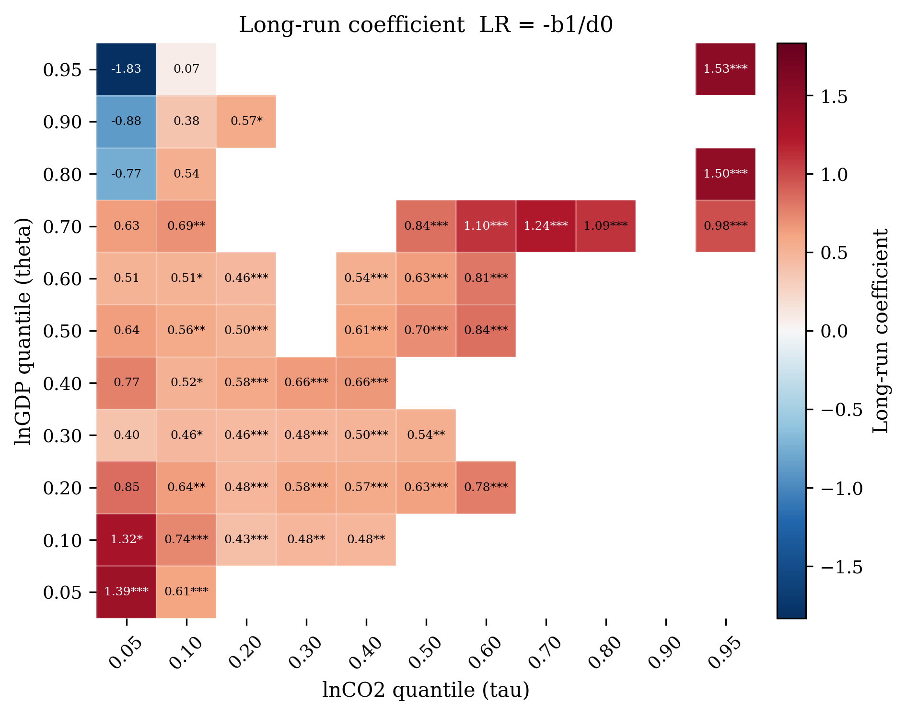
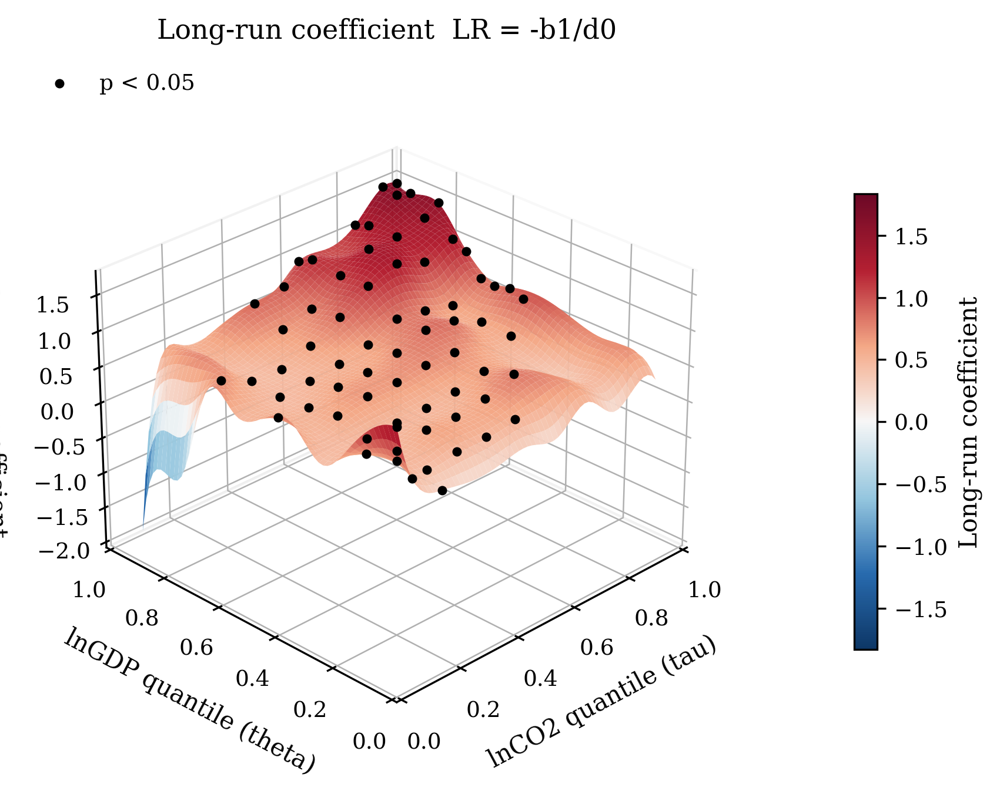
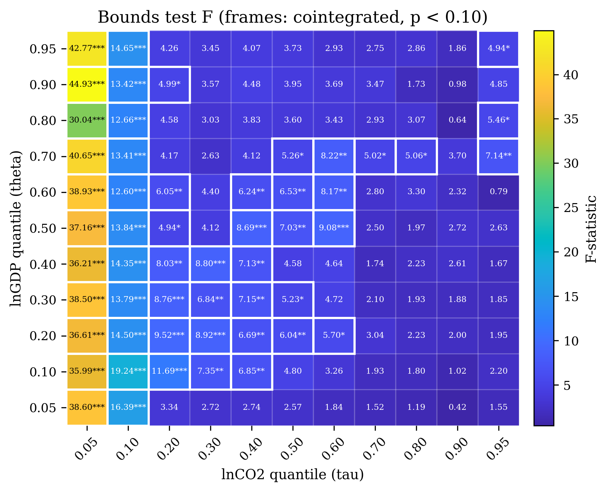
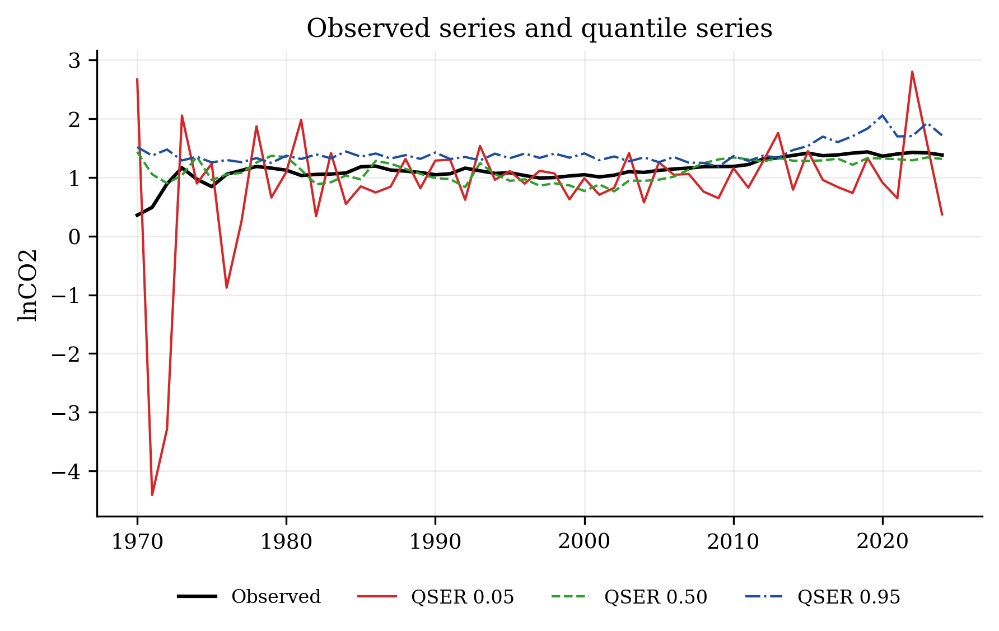
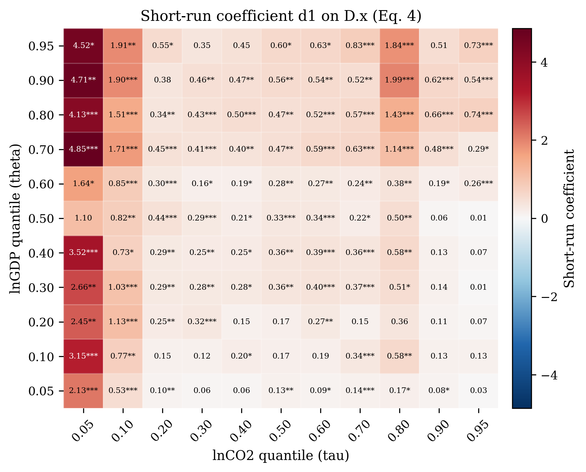
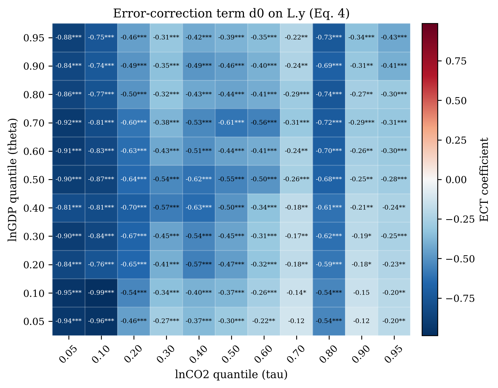
Egypt
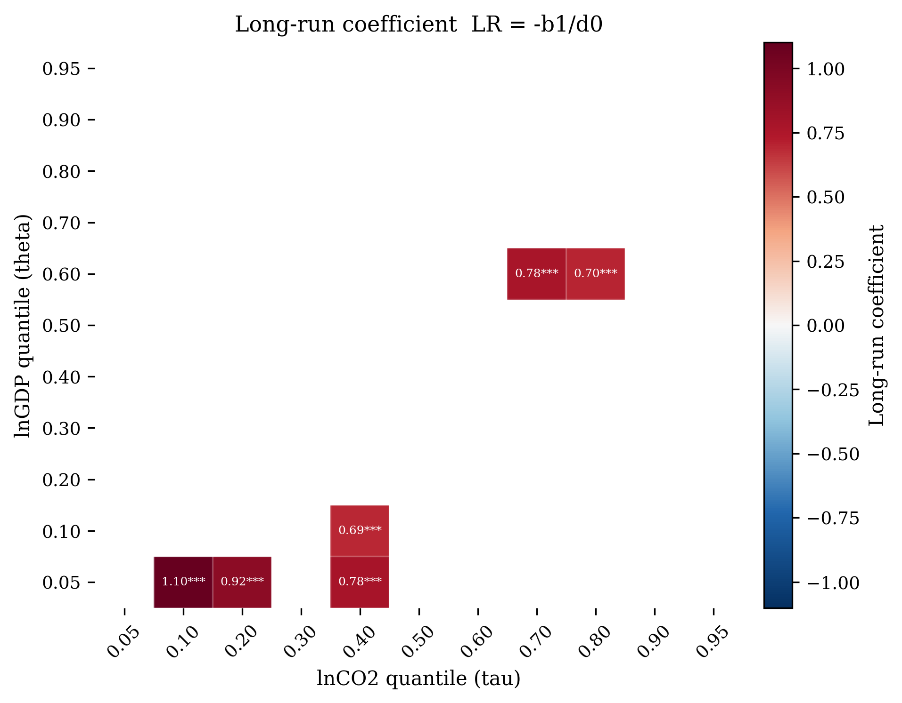
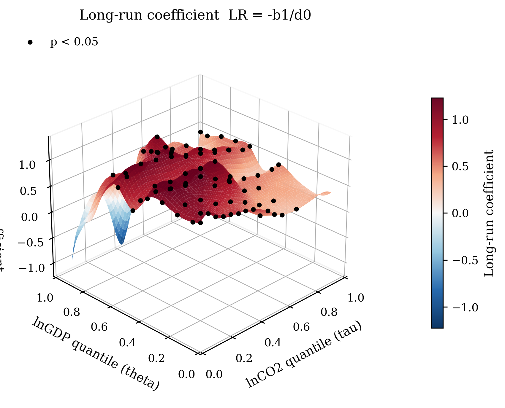
SyntaxMain functions
Every result has .summary(), .to_latex(), .to_markdown(), .to_frame(), .interpret() and .plot(kind). Full argument lists are in the docstrings (help(qf.qqc_gs)) and in the guide.
qqfrontier.connectedness
qqc_gs(x, taus, nlag=1, window=200, horizon=20, cov_type='uncentered')
qqc_kernel(x, taus, window=200, horizon=20, bandwidth=0.15, presample=100, noncross='bondell', n_jobs=1)
qqc_tvp(x, taus, horizon=30, delta=0.99, kappa=0.99)Also: gfevd, connectedness_table, decompose_tci, compare_heatmaps, cond_pit, dqlm, sim_qqvar, mc_qqvar
qqfrontier.quantilogram
cross_quantilogram(y1, y2, tau1, tau2, k)
cross_quantilogram_test(y1, y2, tau1, tau2, max_lag=20, n_boot=1000, sup_range=None, self_normalized=False)
partial_cross_quantilogram(y1, y2, controls, tau1, tau2, tau_z, k=1)Also: block_length, stationary_bootstrap_index
qqfrontier.causality
qgc_instability(y, x, lags=1, taus=0.05..0.95, n_boot=499, method='bootstrap', moment=1, regimes=True)
qgc_table(y, x, lags=(1,3,6,9))
qgc_map(y, x, lags=(1,...,6))Also: simulate_null
qqfrontier.coherency
quantile_coherency(x, y, taus, bandwidth=0.5 n^-1/4, kernel='epanechnikov', ci=True, periods={'W':5,'M':22,'Y':250})Also: kernel_weights
qqfrontier.qqardl
qqardl_fit(y, x, tau=(.05,.10,...,.95), theta=None, lags=(1,1), btest='eq1', vce='ols', lrtype='multiplier')
qser(y, taus)
ardl_bounds_pvalue(F, n, k=1, sr=2)ReferencesPapers implemented
- Baruník, J. and Kley, T. (2019). Quantile coherency. The Econometrics Journal, 22(2), 131–152. doi:10.1093/ectj/utz002
- Bonaccolto, G., Caporin, M. and Gupta, R. (2026). Rethinking quantile-on-quantile connectedness. Finance Research Letters, 114, 111095.
- Bondell, H. D., Reich, B. J. and Wang, H. (2010). Noncrossing quantile regression curve estimation. Biometrika, 97(4), 825–838. doi:10.1093/biomet/asq048
- Candelo-Viáfara, J. M. and Orrego-Reyes, J. E. (2026). A TVP quantile-on-quantile VAR approach. SSRN. doi:10.2139/ssrn.7434976
- Chatziantoniou, I., Gabauer, D. and Stenfors, A. (2021). Economics Letters, 204, 109891. doi:10.1016/j.econlet.2021.109891
- Destek, M. A., Radulescu, M., Ozkan, O. and Balsalobre-Lorente, D. (2025). Journal of Environmental Management, 389, 126089. doi:10.1016/j.jenvman.2025.126089
- Diebold, F. X. and Yilmaz, K. (2012). International Journal of Forecasting, 28(1), 57–66. doi:10.1016/j.ijforecast.2011.02.006
- Gabauer, D. and Stenfors, A. (2024). Finance Research Letters, 60, 104852. doi:10.1016/j.frl.2023.104852
- Han, H., Linton, O., Oka, T. and Whang, Y.-J. (2016). The cross-quantilogram. Journal of Econometrics, 193(1), 251–270. doi:10.1016/j.jeconom.2016.03.001
- Kripfganz, S. and Schneider, D. C. (2020). Oxford Bulletin of Economics and Statistics, 82(6), 1456–1481. doi:10.1111/obes.12377
- Li, T.-H. (2022). Quantile Fourier transform, quantile series, and nonparametric estimation of quantile spectra. arXiv:2211.05844. doi:10.48550/arXiv.2211.05844
- Mayer, A., Wied, D. and Troster, V. (2025). Quantile Granger causality in the presence of instability. Journal of Econometrics, 249, 105992. doi:10.1016/j.jeconom.2025.105992
- Pesaran, M. H., Shin, Y. and Smith, R. J. (2001). Journal of Applied Econometrics, 16(3), 289–326. doi:10.1002/jae.616
- Politis, D. N. and Romano, J. P. (1994). The stationary bootstrap. JASA, 89(428), 1303–1313. doi:10.1080/01621459.1994.10476870